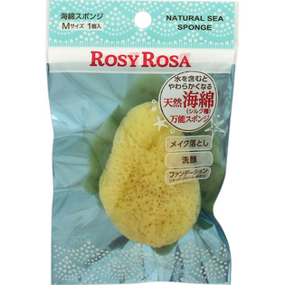
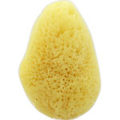

返回列表
产品名称：ロージーローザ 天然海綿スポンジ（シルク種） M

シャンテイ ロージーローザ 天然海綿スポンジ（シルク種） M ＿
メーカー シャンテイ
JANコード 4901604455202
商品の特徴
水を含むとやわらかくなる天然海綿（シルク種）万能スポンジです。
成分・分量
＜材質＞
天然海綿（シルク種）
用法及び用量
＜使用方法＞
○洗顔用として・・・
天然海綿に水を含ませやわらかくしてから、洗顔料をつけ、よく泡立ててから優しく洗顔してください。
○ファンデーション リキッド・クリーム・水あり
天然海綿に水を良く含ませて軽くしぼってからお使いください。
ご使用後は、ファンデーションや洗顔料を洗い落とし、水気をよく切ってから陰干しして十分に乾燥させてください。